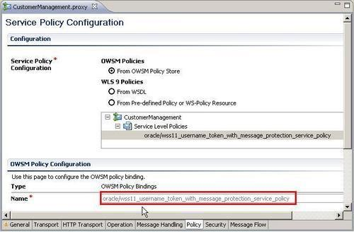
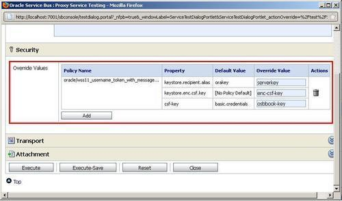

In this recipe, we will combine message protection with user authentication. For this we can reuse the client Java keystore and the osbbook user from the preceding recipes.
For this we will use the same simple OSB project as in the previous Securing a proxy service using username and password authentication through OWSM recipe.
Import the getting-ready project into Eclipse OEPE from \chapter-11\getting-ready\securing-a-proxy-service-with-auth-and-message-protection.
The steps to execute in this recipe are the same as in the previous Securing a proxy service using username and password authentication through OWSM recipe, only another policy needs to be selected. In the Eclipse OEPE, perform the following steps:
proxy folder of the securing-a-proxy-service-with-auth-and-message-protection project. *username_token_with* into the Name field and click Search.The Username Token policy will be displayed in the Policy tab of the proxy service.

Instead of the oracle/wss11_username_token_with_message_protection_service_policy we could also use oracle/wss10_username_token_with_message_protection_service_policy for this proxy service.
In the Service Bus console, perform the following steps for testing the service:
proxy folder) and click on the Launch Test Console icon (with the bug). serverkey into the Override Value field for the property keystore.recipient.alias. enc-csf-key into the Override Value field for the property keystore.enc.csf.key. osbbook-key into the Override Value field for the property csf.key.